import torch
import torch.distributions as dist
torch.manual_seed(1)
# Model parameters
sigma_v = 0.3 # transition (velocity) noise
sigma_o = 1.0 # observation noise
T = 50 # number of time steps
# Initial state:
init_pos = torch.zeros(2)
init_vel = torch.tensor([1.0, 0.5])
init_state = torch.cat([init_pos, init_vel])8 Sequential Monte Carlo
\[ \def\then{\mathbin{;}} \def\kernel{\rightsquigarrow} \def\swap{\mathsf{swap}} \def\id{\mathsf{id}} \def\cp{\mathsf{copy}} \def\del{\mathsf{del}} \def\ivmark#1{[\![#1]\!]} \]
8.1 Introduction
In the chapter on conditioning we saw how to turn a string diagram with weights into samples from the conditional distribution it represents: walk through the diagram left to right, sampling at every probability kernel and recording the weight at every weight box. This weighted sampling recipe is general but on its own it scales poorly. As the diagram gets longer, the weights concentrate on a few samples, making the samples a poor representation of the target distribution.
This chapter returns to weighted sampling and adds two substantive improvements that turn it into a practical inference algorithm:
- Resampling. When the weights become too uneven, we duplicate high-weight samples and discard low-weight samples.
- MCMC moves. Resampling alone produces many copies of the same particle. To restore diversity, we can periodically add noise using an MCMC kernel that leaves the current target distribution invariant.
The resulting family of algorithms is called sequential Monte Carlo (SMC).
8.2 State space models
8.2.1 General state space models
A state space model (SSM) consists of an initial distribution \(i : I \kernel X\), a transition kernel \(k : X \kernel X\), and an observation kernel \(o : X \kernel Y\). In the discrete setting this is exactly a hidden Markov model (HMM), but the same structure can be used in continuous or hybrid settings as well. The following string diagram represents the joint distribution \(p(x_t, y_0, \ldots, y_t)\) over the hidden state at time \(t\) and all observations up to time \(t\).

We assume that the observation kernel \(o : X \kernel Y\) has a density \(\ell_o(y \mid x)\) with respect to some base measure on \(Y\) (see the chapter on hybrid models). This lets us pre-condition \(o\) on an observed value \(\bar y_s\) by replacing \(o\) with the likelihood weight \(\ell_o(\bar y_s \mid x_s)\). By contrast, what follows only requires us to sample from the initial distribution \(i\) and the transition kernel \(k\), so we do not need to assume they have densities.
Filtering problem. Given observations \(\bar y_0, \ldots, \bar y_T\), we want to compute the posterior over the current hidden state given all observations so far: \[ p(x_t \mid \bar y_0, \ldots, \bar y_t) \quad \text{for } t = 0, \ldots, T. \]
This is called the filtering problem. Intuitively, \(p(x_t \mid \bar y_0, \ldots, \bar y_t)\) encodes our beliefs about the hidden state at time \(t\) given everything we have observed so far. This can be achieved by pre-conditioning the SSM diagram on the observed values \(\bar y_0, \ldots, \bar y_T\) and computing the composite:

Here the weights \(w_s(x_s) = \ell_o(\bar y_s \mid x_s)\) are given by the likelihood of the observed value at time \(s\) under the current state \(x_s\). The resulting kernel is not normalized, but it is proportional to the desired posterior. Hence, we can apply our weighted sampling techniques from the conditioning chapter to sample from it and compute expectations. This forms the basis of particle filtering.
Connection to forward algorithm. In Exercise 4, we solved this exactly for discrete HMMs using the forward algorithm: \[ \alpha_{t+1} = (\alpha_t \then k) \odot w_{t+1}, \qquad w_{t+1}(x) = \ell_o(\bar y_{t+1} \mid x), \] where \(\odot\) is the copy-composition operation.
This recursion still holds in principle: it is just the left-to-right evaluation of the pre-conditioned string diagram. But now \(\alpha_t\) is a general kernel. Even when \(k\) itself has a density \(\ell_k\), the sequential composition step \[ (\alpha_t \then k)(x') = \int_X \ell_k(x' \mid x)\, \alpha_t(x)\, dx \] is generally not available in closed form, and the same integral has to be done again at every time step. The Hadamard product with \(w_{t+1}\) is just pointwise multiplication by the likelihood, so the whole obstacle is the integral.
There is a notable exception. If the initial distribution, transition kernel, and observation kernel are all linear-Gaussian then every \(\alpha_t\) stays Gaussian, and the integral above reduces to algebraic updates on the mean and covariance. The forward recursion then gives the classical Kalman filter.
8.2.2 Example: 2D object tracking
We will now illustrate these ideas using a simple 2D tracking problem. Imagine watching a single object drift across a 2D plane. At each time step we get a noisy reading of where it is, but never of how fast it is moving. We would like to recover its true location and velocity from these noisy snapshots, as they come in.
Our model formalizes two intuitions about this scenario:
- Motion is smooth. The object does not teleport: from one step to the next, its velocity changes only by a small random nudge, and its position is just its old position plus the new velocity. This is the transition kernel.
- Measurements are imprecise. Each reading equals the true position plus independent Gaussian noise. The velocity is never observed directly. This is the observation kernel.
Formally, the hidden state collects the position \(p\) and velocity \(v\) of an object, \[ x_t = (p_x, p_y, v_x, v_y) \in \mathbb{R}^4. \] The transition kernel models the velocity as a Gaussian random walk and integrates it into the position: \[ v_{t+1} = v_t + \varepsilon^v_t, \qquad \varepsilon^v_t \sim \mathsf{Normal}(0, \sigma_v^2 I), \qquad p_{t+1} = p_t + v_{t+1}. \] The observation kernel returns a noisy measurement of the position only: \[ y_t = p_t + \varepsilon^o_t, \qquad \varepsilon^o_t \sim \mathsf{Normal}(0, \sigma_o^2 I). \]
Since this is a linear-Gaussian SSM, the Kalman filter would solve it exactly. We will use it to illustrate particle filtering, which works in much more general settings
We fix concrete values once and for all so that every figure in the chapter comes from the same simulated trajectory.
To perform forward simulations, we implement the transition and observation kernels:
def transition(state):
"""Sample x_{t+1} ~ k(· | state)."""
pos, vel = state[:2], state[2:]
new_vel = vel + sigma_v * torch.randn(2)
new_pos = pos + new_vel
return torch.cat([new_pos, new_vel])
def observe_position(state):
"""Sample y_t ~ o(· | state)."""
pos = state[:2]
return pos + sigma_o * torch.randn(2)Simulating one trajectory and its observations is then a straightforward loop:
states = [init_state]
observations = [observe_position(init_state)]
for t in range(T):
states.append(transition(states[-1]))
observations.append(observe_position(states[-1]))
states = torch.stack(states) # shape (T+1, 4)
observations = torch.stack(observations) # shape (T+1, 2)
true_positions = states[:, :2] # shape (T+1, 2)Code
import matplotlib.pyplot as plt
# Fixed plot limits used throughout the chapter.
XLIM = (-5, 55)
YLIM = (-15, 35)
fig, axes = plt.subplots(1, 2, figsize=(7, 3.5))
ax = axes[0]
ax.plot(true_positions[:, 0], true_positions[:, 1],
color="black", linewidth=1, alpha=0.5)
ax.scatter(true_positions[:, 0], true_positions[:, 1],
c=range(T + 1), cmap="viridis", s=15, zorder=3)
ax.set(title="True trajectory", xlabel="pos_x", ylabel="pos_y")
ax = axes[1]
ax.scatter(observations[:, 0], observations[:, 1],
c=range(T + 1), cmap="viridis", s=15, marker="x")
ax.set(title="Noisy observations", xlabel="pos_x", ylabel="pos_y")
for ax in axes:
ax.set_xlim(*XLIM)
ax.set_ylim(*YLIM)
ax.set_aspect("equal")
plt.tight_layout()
plt.show()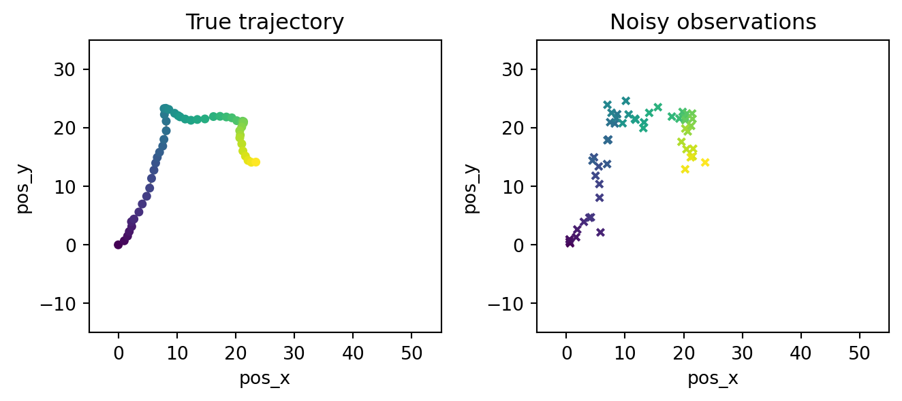
The left panel shows the smooth latent trajectory (color encodes time). The right panel shows only the noisy position measurements \(\bar y_0, \ldots, \bar y_T\). Our job is to recover something close to the left panel from the right panel.
8.3 Particle filtering
8.3.1 Applying weighted sampling to the SSM
The pre-conditioned SSM diagram is a string diagram with weights. We have seen previously how to sample from such a diagram: we walk through it left to right, sampling whenever we hit a probability kernel and recording the weight whenever we hit a weight box. This method is called sequential importance sampling. The weighted samples produced in this way are called particles.
Since the diagram has a repeating shape, the main part of our weighted sampling algorithm repeats two steps:
- Propagate. For each particle \(i\), sample \(x_{t+1}^{(i)} \sim k(\cdot \mid x_t^{(i)})\).
- Reweight. For each particle \(i\), multiply its weight by \(w_{t+1}(x_{t+1}^{(i)}) = \ell_o(\bar y_{t+1} \mid x_{t+1}^{(i)})\).
In pseudo-code:
# Initialize
for i = 1..N:
x_0^(i) ~ i(·)
w_0^(i) = ℓ_o(ȳ_0 | x_0^(i))
for t = 0..T-1:
for i = 1..N:
x_{t+1}^(i) ~ k(· | x_t^(i)) # propagate
w_{t+1}^(i) = w_t^(i) · ℓ_o(ȳ_{t+1} | x_{t+1}^(i)) # reweight
# Estimate
E[f(x_t) | ȳ_0:t] ≈ Σ_i w_t^(i) f(x_t^(i)) / Σ_i w_t^(i).Note that the algorithm is online in the sense that it processes observations one at a time. This means that we can run it as observations arrive, without needing to rerun inference from scratch on the whole sequence. Moreover, the algorithm only needs to store the current weighted samples \(\{(x_t^{(i)}, w_t^{(i)})\}_{i=1}^N\) at each time step, so the memory requirement does not grow over time. This is a big advantage over MCMC, which requires sampling all latent variables \(x_{0:T}\) and thus storing an ever-growing state.
8.3.2 Implementation with WeightedSampling.torch
The pseudocode above translates almost line-by-line into a WeightedSampling.torch model. The transition becomes a sample, the likelihood becomes an observe, and the time loop becomes a Python for loop.
from weighted_sampling import model, sample, observe, deterministic
@model
def tracking_model(obs_seq):
"""Bootstrap SSM for the 2D tracker, run on observations 0..S."""
S = len(obs_seq) - 1
cov_v = sigma_v**2 * torch.eye(2)
cov_o = sigma_o**2 * torch.eye(2)
cov_init = 0.5 * torch.eye(4)
# Broader prior than the data-generating initial state, to express
# ignorance about the true initial position and velocity.
state = sample("state_0", dist.MultivariateNormal(init_state, cov_init))
observe(obs_seq[0], dist.MultivariateNormal(state[..., :2], cov_o))
for t in range(1, S + 1):
pos, vel = state[..., :2], state[..., 2:]
# Propagate:
new_vel = sample(f"v_{t}", dist.MultivariateNormal(vel, cov_v))
new_pos = pos + new_vel
state = deterministic(f"state_{t}", torch.cat([new_pos, new_vel], dim=-1))
# Reweight:
observe(obs_seq[t], dist.MultivariateNormal(state[..., :2], cov_o))Each call to tracking_model(obs_seq[:s+1], num_particles=N, ess_threshold=0) returns the cloud of particles at time \(s\). The argument ess_threshold=0 disables resampling, so this run is pure sequential importance sampling; we will discuss it again once resampling is introduced. We extract clouds at six time points:
N = 10_000
snapshot_times = [0, 5, 10, 20, 35, 50]
clouds = {}
for s in snapshot_times:
res = tracking_model(observations[: s + 1], num_particles=N, ess_threshold=0)
clouds[s] = (res[f"state_{s}"], res.norm_weights) # ((N, 4), (N,))Plotting the position component of each cloud, with marker alpha proportional to the normalized weight, shows how the particle cloud evolves over time:
Code
fig, axes = plt.subplots(2, 3, figsize=(8, 5.2), sharex=True, sharey=True)
for ax, s in zip(axes.flat, snapshot_times):
states_s, w_s = clouds[s]
pos_s = states_s[..., :2]
# Scale marker alpha by normalized weight (clipped for visibility).
alpha = (w_s / w_s.max()).clamp(min=0.02)
ax.scatter(pos_s[:, 0], pos_s[:, 1],
s=8, c="steelblue", alpha=alpha.numpy(), linewidths=0)
# Trajectory so far + current truth + current observation.
ax.plot(true_positions[:s + 1, 0], true_positions[:s + 1, 1],
color="black", linewidth=0.7, alpha=0.4)
ax.scatter(*true_positions[s], marker="*", s=80,
color="red", zorder=4, label="true")
ax.scatter(*observations[s], marker="x", s=40,
color="black", zorder=4, label="obs")
ax.set_title(f"t = {s}")
ax.set_xlim(*XLIM)
ax.set_ylim(*YLIM)
ax.set_aspect("equal")
axes[0, 0].legend(loc="upper left", fontsize=8)
fig.suptitle("Filtering cloud over time (no resampling)")
plt.tight_layout()
plt.show()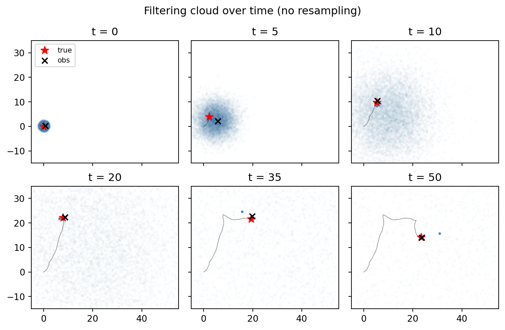
At \(t = 0\), the cloud sits exactly at the initial state. As time progresses, the propagate step lets it spread out, and each observe reweights it toward the most recent measurement. We observe that the cloud becomes increasingly diffuse over time. Moreover, in the later panels, almost all the weight is concentrated on a few particles, which are not necessarily close to the true state. This is called weight degeneracy.
8.3.3 Effective sample size
To turn the visual observation of weight degeneracy into a number we can monitor, we need a measure of how uneven the weight distribution is. The standard choice is the effective sample size (ESS): \[ \text{ESS}_t = \frac{1}{\sum_{i=1}^N \bar w_t^{(i)\,2}}, \] where \(\bar w_t^{(i)} = w_t^{(i)} / \sum_j w_t^{(j)}\) are the normalized weights at time \(t\). ESS is a number between \(1\) and \(N\) with two informative extreme cases:
- All weights equal: \(\text{ESS}_t = N\). Every particle contributes equally. Hence the cloud carries the same information as \(N\) independent samples from the posterior.
- All weight on one particle: \(\text{ESS}_t = 1\). The cloud is effectively a single point.
So ESS tells us how many particles’ worth of information we are carrying. Weight degeneracy is the statement that \(\text{ESS}_t\) drops toward \(1\) as \(t\) grows.
Let us see this happen in our tracking example. ESS is a one-line function of the normalized weights, which we already collected in clouds from the previous section:
def ess(norm_weights):
"""Effective sample size of a vector of normalized weights."""
return 1.0 / (norm_weights**2).sum()
ess_per_snapshot = {s: ess(clouds[s][1]).item() for s in snapshot_times}To see how the weight distribution itself evolves, we plot the (log-scale) histogram of normalized weights at every snapshot time:
Code
fig, axes = plt.subplots(2, 3, figsize=(8, 4.5), sharey=True)
for ax, s in zip(axes.flat, snapshot_times):
_, w_s = clouds[s]
ax.hist(w_s.numpy(), bins=50, log=True, color="steelblue", edgecolor="white")
ax.set_title(f"t = {s} (ESS = {ess_per_snapshot[s]:.1f})")
for ax in axes[:, 0]:
ax.set_ylabel("count")
fig.suptitle("Weight distribution over time (no resampling)")
plt.tight_layout()
plt.show()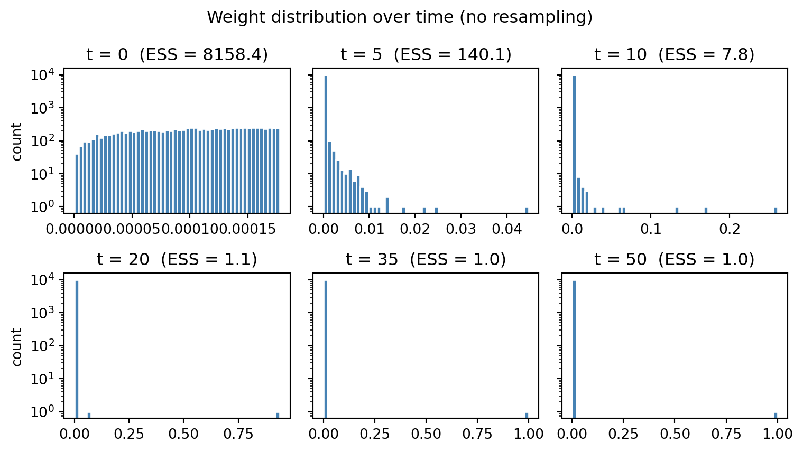
We observe that at \(t=20\) all particles apart from 1 have negligible weight, and the ESS is 1. The corresponding ESS curve tracks the collapse quantitatively:
Code
ts = list(snapshot_times)
ess_vals = [ess_per_snapshot[s] for s in ts]
fig, ax = plt.subplots(figsize=(5, 3))
ax.plot(ts, ess_vals, marker="o", color="steelblue")
ax.axhline(N, color="black", linestyle=":", linewidth=0.8, label=f"N = {N}")
ax.axhline(1, color="grey", linestyle=":", linewidth=0.8, label="1")
ax.set(xlabel="t", ylabel="ESS",
title="Effective sample size over time",
yscale="log")
ax.legend(loc="upper right", fontsize=8)
plt.tight_layout()
plt.show()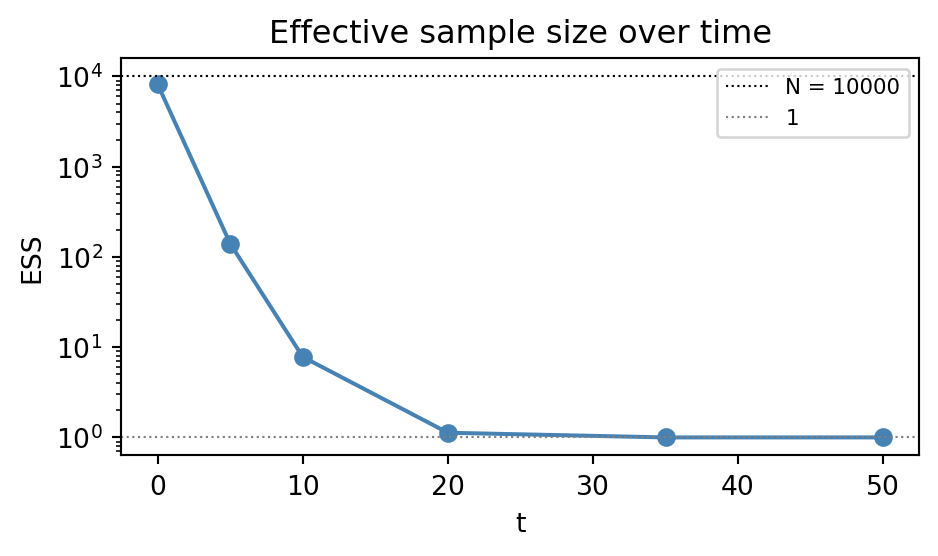
Hence, although we are updating 10,000 particles at every step, the cloud is effectively carrying the information of only a single particle by the end of the sequence.
8.3.4 Resampling
There is a useful way to read what we have built so far. The particle cloud is a population. Each sample step is a mutation that perturbs the population’s genotype while each observe step assigns a fitness to every individual. Over time, a tiny minority accumulates most of the fitness.
The missing ingredient for the population to evolve is selection. After fitness has been measured, we form the next generation by sampling individuals with replacement in proportion to their fitness. Hence, high-fitness particles reproduce while low-fitness particles die off. Since the fitness information has now been translated into the number of surviving offspring, we reset all weights to uniform.
Concretely, multinomial resampling at time \(t\) does this:
- Sample ancestor indices \(a^{(1)}, \ldots, a^{(N)} \sim \text{Categorical}(\bar w_t^{(1)}, \ldots, \bar w_t^{(N)})\).
- Set \(x_t^{(i)} \leftarrow x_t^{(a^{(i)})}\) and \(w_t^{(i)} \leftarrow 1/N\) for all \(i\).
We only want to pay for selection when the population is actually unhealthy, so we trigger resampling only when \(\text{ESS}_t < \tau \cdot N\) for some threshold \(\tau\) (default \(\tau = 0.5\) in WeightedSampling.torch). Setting \(\tau = 0\) disables resampling entirely, recovering plain sequential importance sampling — this is the choice we made in the previous section. The resulting algorithm applied to SSMs is called the bootstrap particle filter.
8.3.4.1 Bootstrap particle filter in action
In our implementation we get the bootstrap particle filter simply by re-running tracking_model with the default ess_threshold=0.5:
clouds_pf = {}
for s in snapshot_times:
res = tracking_model(observations[: s + 1], num_particles=N, ess_threshold=0.5)
clouds_pf[s] = (res[f"state_{s}"], res.norm_weights)
ess_pf = {s: ess(clouds_pf[s][1]).item() for s in snapshot_times}Plotting the position component of each cloud, with alpha proportional to weight, shows that the diffusion is gone: the cloud now hugs the true trajectory throughout and represents a good estimate of the hidden state:
Code
fig, axes = plt.subplots(2, 3, figsize=(8, 5.2), sharex=True, sharey=True)
for ax, s in zip(axes.flat, snapshot_times):
states_s, w_s = clouds_pf[s]
pos_s = states_s[..., :2]
alpha = (w_s / w_s.max()).clamp(min=0.02)
ax.scatter(pos_s[:, 0], pos_s[:, 1],
s=8, c="steelblue", alpha=alpha.numpy(), linewidths=0)
ax.plot(true_positions[:s + 1, 0], true_positions[:s + 1, 1],
color="black", linewidth=0.7, alpha=0.4)
ax.scatter(*true_positions[s], marker="*", s=80,
color="red", zorder=4, label="true")
ax.scatter(*observations[s], marker="x", s=40,
color="black", zorder=4, label="obs")
ax.set_title(f"t = {s}")
ax.set_xlim(*XLIM)
ax.set_ylim(*YLIM)
ax.set_aspect("equal")
axes[0, 0].legend(loc="upper left", fontsize=8)
fig.suptitle("Filtering cloud over time (with resampling, τ = 0.5)")
plt.tight_layout()
plt.show()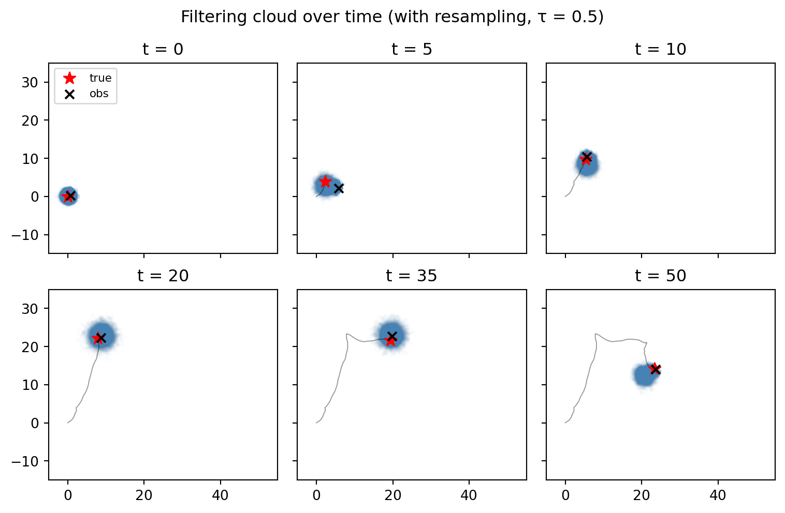
The same diagnostic plots that exposed the SIS pathology now show that degeneracy is gone too:
Code
fig, axes = plt.subplots(2, 3, figsize=(7, 4.5), sharey=True)
for ax, s in zip(axes.flat, snapshot_times):
_, w_s = clouds_pf[s]
ax.hist(w_s.numpy(), bins=50, log=True, color="steelblue", edgecolor="white")
ax.set_title(f"t = {s} (ESS = {ess_pf[s]:.1f})")
for ax in axes[:, 0]:
ax.set_ylabel("count")
fig.suptitle("Weight distribution over time (with resampling)")
plt.tight_layout()
plt.show()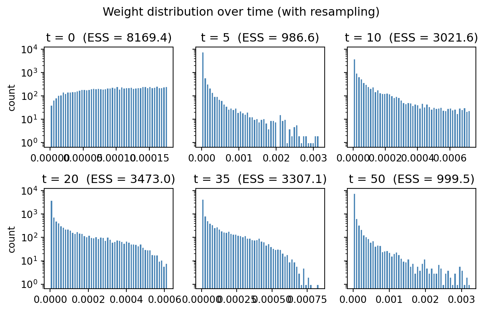
Code
fig, ax = plt.subplots(figsize=(5, 3))
ax.plot(snapshot_times, [ess_per_snapshot[s] for s in snapshot_times],
marker="o", color="grey", label="SIS (no resampling)")
ax.plot(snapshot_times, [ess_pf[s] for s in snapshot_times],
marker="o", color="steelblue", label="bootstrap PF (τ = 0.5)")
ax.axhline(N, color="black", linestyle=":", linewidth=0.8, label=f"N = {N}")
ax.set(xlabel="t", ylabel="ESS",
title="Effective sample size over time",
yscale="log")
ax.legend(loc="lower left", fontsize=8)
plt.tight_layout()
plt.show()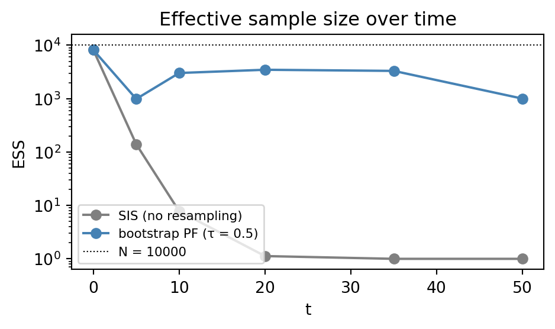
8.4 Generalising to any diagram
Weighted sampling methods with resampling apply to any diagram with weights. The generic term for such algorithms is sequential Monte Carlo (SMC). As an example, consider a Bayesian linear regression model:
@model
def bayesian_linreg(data):
a = sample("a", dist.Normal(0.0, 2.0))
b = sample("b", dist.Normal(0.0, 2.0))
for x, y in data:
observe(y, dist.Normal(a * x + b, 0.2))We pre-condition the string diagram for the model on the observed pairs \((\bar x_0, \bar y_0), \ldots, (\bar x_{D-1}, \bar y_{D-1})\) and arrange it in a similar left-to-right shape as the SSM:
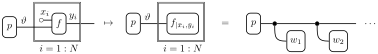
Here \(\vartheta := (a,b)\) and \(w_s(\vartheta) = \ell(\bar y_s \mid a \bar x_s + b)\) is the normal likelihood of the observed data given the parameters.
Running the SMC algorithm on this diagram first samples \(N\) particles from the prior over \((a, b)\). Then it iterates over each data point and multiplies the particle weight by the likelihood of the observed \(y\) value under the current \((a, b)\) parameters. When ESS is too low, it resamples the particles in proportion to their weights.
We run bayesian_linreg on synthetic data with the default ess_threshold=0.5, taking a snapshot after each of a few prefix lengths:
true_a, true_b = 2.0, -1.0
D = 30
xs_lr = torch.linspace(0, 5, D)
ys_lr = true_a * xs_lr + true_b + 0.2 * torch.randn(D)
data_lr = list(zip(xs_lr, ys_lr))
N_lr = 2_000
snapshot_data = [1, 2, 5, 10, 20, 30]
clouds_lr = {}
for s in snapshot_data:
res = bayesian_linreg(data_lr[:s], num_particles=N_lr, ess_threshold=0.5)
summ = res.summary()
clouds_lr[s] = {
"a": res["a"],
"b": res["b"],
"w": res.norm_weights,
"n_unique": summ["a"]["n_unique"],
}The 2×3 grid below shows the \((a, b)\) particle cloud after consuming the first \(s\) data points, with marker alpha scaled by weight. The true parameters are marked with a red star.
Code
fig, axes = plt.subplots(2, 3, figsize=(8, 5.2), sharex=True, sharey=True)
for ax, s in zip(axes.flat, snapshot_data):
c = clouds_lr[s]
alpha = (c["w"] / c["w"].max()).clamp(min=0.02)
ax.scatter(c["a"].numpy(), c["b"].numpy(),
s=8, c="steelblue", alpha=alpha.numpy(), linewidths=0)
ax.scatter(true_a, true_b, marker="*", s=80,
color="red", zorder=4, label="true")
ax.set_title(f"after {s} obs (n_unique = {c['n_unique']})")
ax.set_xlim(-1, 4)
ax.set_ylim(-3, 1)
for ax in axes[-1, :]:
ax.set_xlabel("a")
for ax in axes[:, 0]:
ax.set_ylabel("b")
axes[0, 0].legend(loc="upper right", fontsize=8)
fig.suptitle("Linear regression particles in (a, b) space (with resampling)")
plt.tight_layout()
plt.show()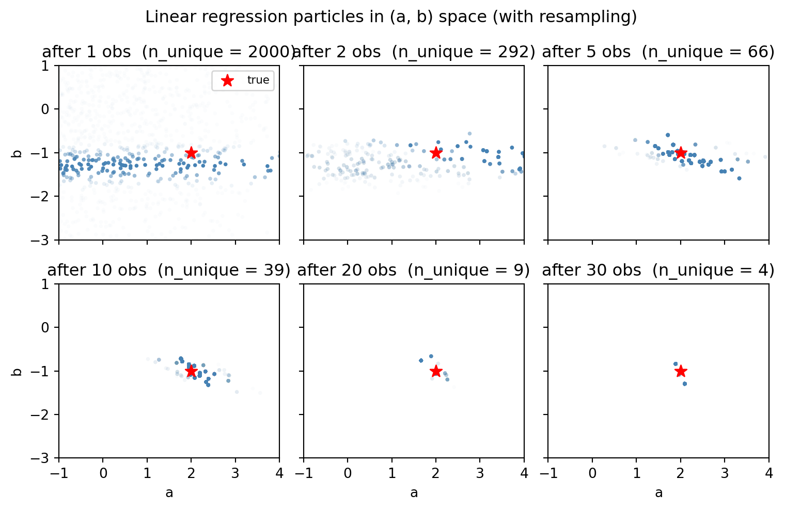
The cloud contracts nicely around the true parameters. However, we notice that as time goes on, fewer and fewer distinct particles remain. Plotting the n_unique makes this quantitative: it drops from \(N\) to a tiny handful:
Code
fig, ax = plt.subplots(figsize=(5, 3))
ax.plot(
snapshot_data,
[clouds_lr[s]["n_unique"] for s in snapshot_data],
marker="o",
color="steelblue",
)
ax.set(
xlabel="data points consumed",
ylabel="n_unique",
title="Loss of diversity over time",
yscale="log",
)
ax.axhline(1.0, color="black", linestyle=":", linewidth=0.8, label="all distinct")
ax.legend(loc="upper right", fontsize=8)
plt.tight_layout()
plt.show()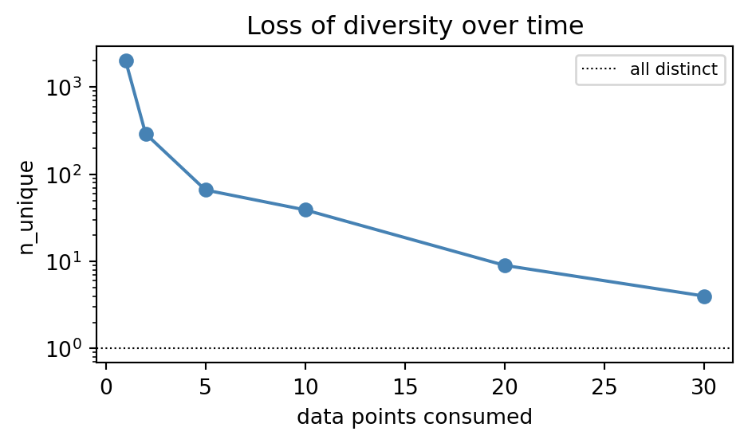
The continuous posterior over \((a, b)\) is being approximated by an ever-smaller discrete set of points. This is sample impoverishment: even when the weights are healthy, the cloud is not a good representation of the posterior because it lacks diversity.
8.5 Restoring diversity with MCMC moves
The reason we did not have this problem in the SSM is that we drew new particles from a random transition kernel at every step, which naturally caused the population to diversify. However, since the \((a,b)\) parameters are only sampled once at the beginning, there is no such mechanism in the linear regression case.
Thinking about the population metaphor, we have a population that reproduces but never mutates. This means that those individuals that were lucky to have high fitness will simply produce many clones of themselves. Hence, over time the population becomes a collection of many identical twins.
The remedy is to artificially diversify the population by adding noise. We do so by regularly feeding the state through a move kernel \(m_i\):
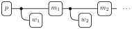
However, for this to not bias our inference, we need to do so in a way that does not alter the underlying target distribution. In other words, our noise kernel should leave the current target invariant.
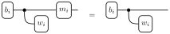
We have seen in the chapter on MCMC how to construct such invariant kernels using Metropolis–Hastings. Hence, to restore diversity, we can augment our model with move kernels that perform MCMC steps on the current particle population.
In WeightedSampling.torch, this idea is implemented using move(...). There are two ready-made proposals:
RandomWalkProposal(scale=...)— symmetric Gaussian random walk.AdaptiveProposal()— Gaussian step adaptively tuned from the current particle population.
We re-run the linear regression model with a RandomWalkProposal move after each observe, and compare against the no-moves baseline from the previous section.
from weighted_sampling import move, RandomWalkProposal
@model
def bayesian_linreg_mh(data):
a = sample("a", dist.Normal(0.0, 2.0))
b = sample("b", dist.Normal(0.0, 2.0))
for x, y in data:
observe(y, dist.Normal(a * x + b, 0.2))
move(["a", "b"], RandomWalkProposal(scale=0.1), threshold=0.5)We collect snapshots at the same prefix lengths as before:
clouds_mh = {}
for s in snapshot_data:
res = bayesian_linreg_mh(data_lr[:s], num_particles=N_lr, ess_threshold=0.5)
summ = res.summary()
clouds_mh[s] = {
"a": res["a"],
"b": res["b"],
"w": res.norm_weights,
"n_unique": summ["a"]["n_unique"],
}After all \(D = 30\) observations, the two \((a, b)\) clouds look very different:
Code
fig, axes = plt.subplots(1, 2, figsize=(7, 3.2), sharex=True, sharey=True)
for ax, (name, c) in zip(axes, [("no moves", clouds_lr[D]),
("RandomWalk", clouds_mh[D])]):
alpha = (c["w"] / c["w"].max()).clamp(min=0.02)
ax.scatter(c["a"].numpy(), c["b"].numpy(),
s=8, c="steelblue", alpha=alpha.numpy(), linewidths=0)
ax.scatter(true_a, true_b, marker="*", s=80, color="red", zorder=4)
ax.set_title(f"{name} (n_unique = {c['n_unique']})")
ax.set_xlabel("a")
axes[0].set_ylabel("b")
fig.suptitle(f"Posterior after {D} observations")
plt.tight_layout()
plt.show()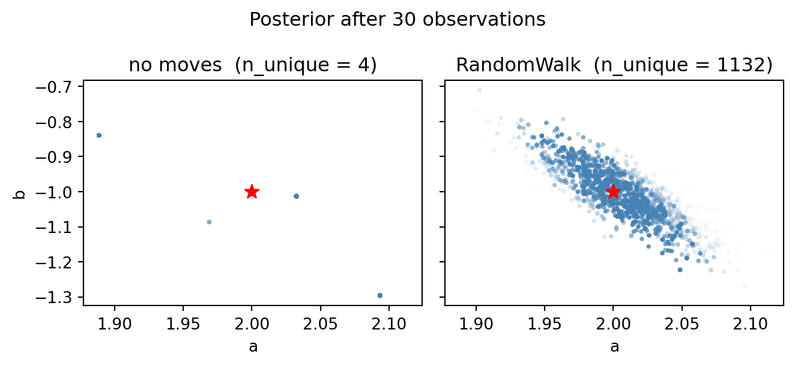
The diversity-over-time curve tells the same story quantitatively:
Code
fig, ax = plt.subplots(figsize=(5.5, 3.2))
ax.plot(snapshot_data, [clouds_lr[s]["n_unique"] for s in snapshot_data],
marker="o", color="grey", label="no moves")
ax.plot(snapshot_data, [clouds_mh[s]["n_unique"] for s in snapshot_data],
marker="o", color="steelblue", label="RandomWalk")
ax.axhline(N_lr, color="black", linestyle=":", linewidth=0.8, label=f"N = {N_lr}")
ax.set(xlabel="data points consumed",
ylabel="n_unique",
title="Diversity over time, with and without MCMC moves",
yscale="log")
ax.legend(loc="lower left", fontsize=8)
plt.tight_layout()
plt.show()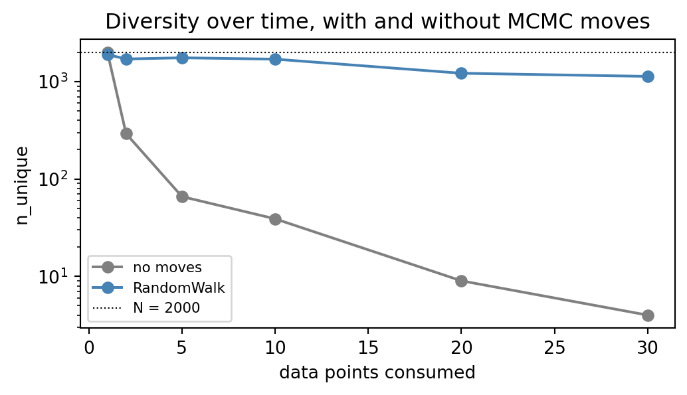
8.6 When to use SMC?
Sequential Monte Carlo has a few distinctive advantages over MCMC:
- Speed when no moves are required. When the propagate step already injects enough randomness (as in our SSM tracker), each step is just batched sampling plus a likelihood evaluation. No accept/reject loop, no chain to mix.
- Direct access to marginals. SMC can approximate marginal posteriors without needing to sample all latent variables.
- Free model evidence. The normalizing constant \(\log p(\bar y_{0:T})\) falls out as a by-product of the weight updates (
result.log_evidence). With MCMC, this quantity is notoriously hard to estimate. - Online updating. New observations are absorbed in \(O(N)\) work per step, without rerunning inference from scratch.
The main cost is the curse of dimensionality: the number of particles needed to keep ESS healthy grows quickly with the dimensionality of the state, and on static-parameter problems we additionally have to budget for MCMC moves to keep the cloud diverse. As a rule of thumb:
- For high-dimensional static parameter problems, MCMC (specifically NUTS) is the safe default.
- For lower-dimensional problems, SMC can be competitive or faster, especially when model evidence or marginal posteriors are also wanted.
- Whenever the model has a genuinely sequential structure, SMC is the natural fit.
When running SMC, two diagnostics should be monitored together throughout the run:
- Effective sample size (\(\text{ESS}_t\)) measures how evenly the weight is spread across particles. A collapsing ESS signals weight degeneracy and is repaired by resampling.
- Number of distinct particles (
n_unique) measures how many different values the cloud actually carries. A collapsingn_uniquewhile ESS looks healthy signals sample impoverishment and is repaired by interleaving MCMC moves.
A healthy run keeps both quantities high; either one collapsing on its own is enough to invalidate the inference.